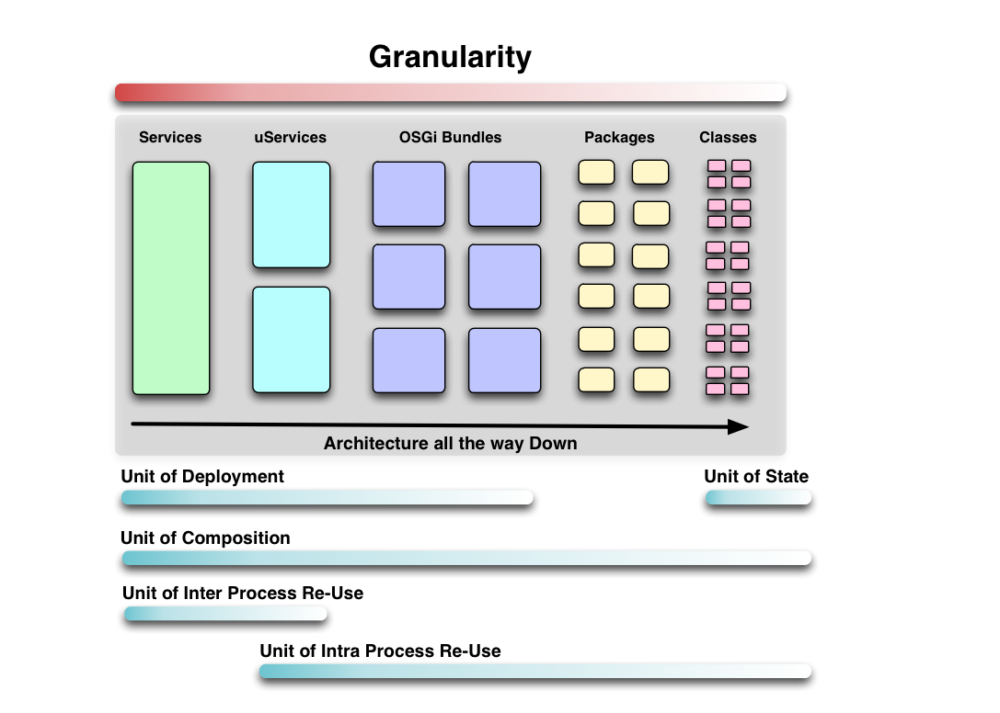
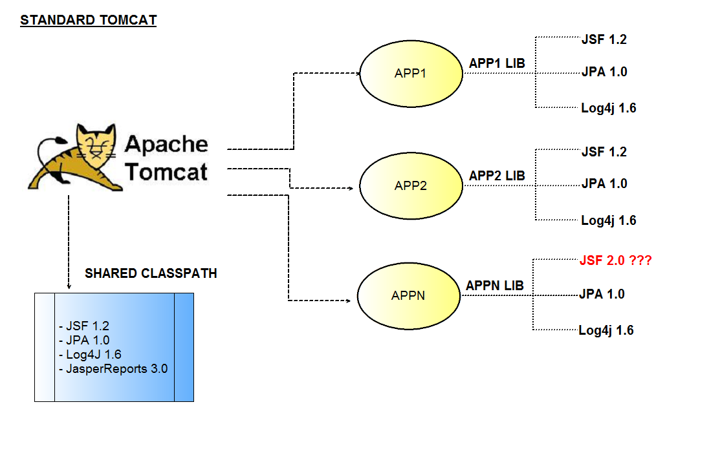
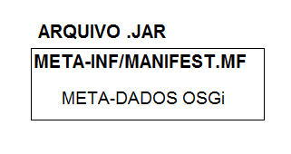
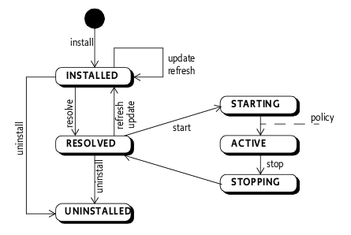
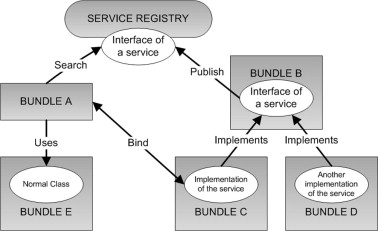
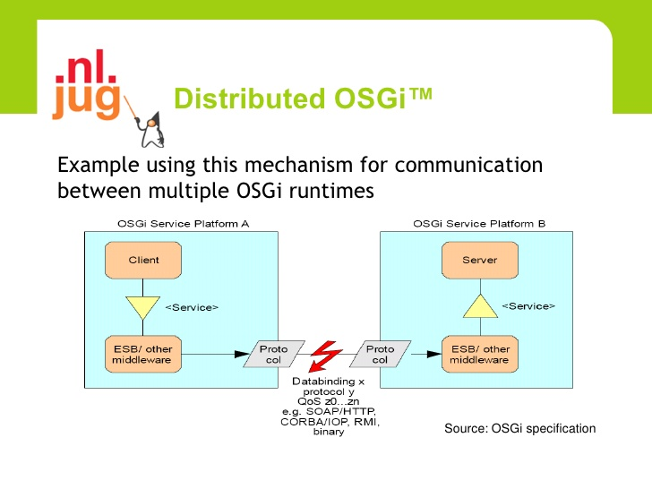

Aplicações modulares em Java
com OSGi
apresentação por

Objetivos
- Sistema modular
- Apresentar o framework OSGi
- Demonstrar os conceitos na prática
- Proposta para TF da disciplina
Agenda
- Sistema modular
- O que é o OSGi?
- Standard Java x OSGi
- Anatomia de um bundle
- Camada de serviços e serviços distribuídos
- Exemplo prático - calculadora modular
- Exercícios
fontes disponíveis em
O que é um sistema modular?
Módulo
- Unidade básica de uma arquitetura modular
- Autocontido
- Alta coesão
- Baixo acoplamento
OSGi
Arquitetura modular orientada a serviços para sistemas distribuídos
Conjunto de especificações que define um sistema dinâmico de componentes para plataforma Java
Padrão "De facto" para aplicações modulares em Java

Vantagens OSGi
- Classpath extendido
- Serviços dinâmicos("Hotplugability")
- Versionamento
- Dependencias explícitas("clear boundaries")
Standard Class Loading

OSGi class loading

OSGi class loading
carregamento de classes baseado em um grafo de módulos versionados
- cada módulo tem seu próprio classpath...
- diversas versões de um mesmo bundle podem ser carregados na mesma JVM...
- compartilhando e reusando classes entre si...
- sem conflitos...
- de uma maneira padronizada...
- significa...
- "NO MORE CLASSPATH HELL!"
Módulo OSGi
Um módulo OSGi ou simplesmente Bundle é um Java archive(.jar) com meta-dados que apenas o OSGi entende

Anatomia de um Bundle
MANIFEST.MF
Bundle-Name: Hello World
Bundle-SymbolicName: org.wikipedia.helloworld
Bundle-Description: A Hello World bundle
Bundle-ManifestVersion: 2
Bundle-Version: 1.0.0
Bundle-Activator: org.wikipedia.Activator
Export-Package: org.wikipedia.helloworld;version="1.0.0"
Import-Package: org.osgi.framework;version="1.3.0"
Ciclo de vida de um Bundle

Camada de Serviços
Principal forma de colaboração entre bundles

Serviços distribuídos

Exercícios
- Adicionar outra operação à calculadora(sem parar a mesma);
- Consumir serviço exposto via Webservices;
- Consumir serviço exposto via OSGi;
Downloads
Referências
- http://www.manning.com/hall
- http://www.webopedia.com/TERM/M/modular_architecture.html
- http://en.wikipedia.org/wiki/OSGi#Projects_using_OSGi
- http://modualrit.blogspot.com.br/2009/02/distributed-osgi-tutorials.html
- http://cxf.apache.org/distributed-osgi.html
- http://cxf.apache.org/distributed-osgi-reference.html
- http://cxf.apache.org/dosgi-architecture.html
- http://blog.akquinet.de/2009/09/14/dynamokos-dealing-with-dynamism-in-osgi-distributed-web-applications/
- http://stackoverflow.com/questions/373193/what-is-classpath-hell-and-is-was-it-really-a-problem-for-java